Computer Science Notes
COMP1313 Computer system I
Hongyi Li
Contents
Intro
What is Computer System
计算机系统 = 硬件+软件，他们协同工作来处理数据和执行任务
Important part 重要组成
CPU中央处理器—— Executes instructions
Memory（Main Memory/RAM）—— 存放
I/O——输入输出
System Bus——传输数据
Physical
CPU’s
Structure
CPU有：
Arithmetic and Logic unit-ALU 算数逻辑单元(负责算数运算)
Control unit-CU 控制单元(告诉其他组件要做什么)
Registers 寄存器(用于存储值的单元)
CPU要：
Fetch instructions 获取指令
Decode instructions 解码指令
Fetch data 获取数据
Process data 处理数据
Write data 写入数据
以上过程化简为’fetch - decode - execute’循环
Registers
寄存器是CPU用于存储值的临时存储空间
它们足够大，可以容纳一个完整的地址，就像一个完整的单词一样大
常见的5个：
PC 存下一条指令地址
CIR 存当前指令
MAR 存要读写的内存地址
MDR 存读出或写入的数据
ACC 存ALU运算结果
SR 状态标志，如溢出，进位
Memory 内存单元
相关：COMP1312 内存中的变量
内存由许多“格子“组成，每格有唯一的地址和内容
Read：
把地址（如 11010000）放进 MAR
CPU 通过控制总线发出读信号
该地址的内容（10010001）被复制到 MDR
Write：
先把要写的数据（11111011）放进 MDR
把目标地址放进 MAR
发出写信号，MDR 的内容被写入内存
I/O and Instructions/Data
不同的 CPU 家族（x86、ARM、MIPS、AVR）指令集不同，机器码互相不能运行。所以我们写高级语言，再针对特定架构编译
间接寻址：
mov r0, [r2]：把 r2 里存的_地址_对应的内存数据读到 r0add r0, r1, [r2]：r1 加上“r2 所指地址里的值“，结果放进 r0方括号表示“取这个地址里的内容“，需要额外访问一次内存
Fetch–Decode–Execute 指令周期
CPU 的工作就是不断循环：取指 → 译码 → 执行 → 存储结果
PC 里是下一条指令的地址
PC → MAR（通过地址总线）
内存中 MAR 所指单元的内容 → MDR
MDR → CIR
PC 加 1，指向下一条
译码并通过控制总线发信号执行
重复
Interrupt 中断
一个让 CPU 暂时停下当前任务、去处理紧急事件的信号。处理完后，CPU 通常回到原来的任务
保存现场：处理中断前，把 PC 和 CIR 压入系统栈。处理完后再恢复，任务从断点继续
嵌套中断 2种方法:
保存当前中断的状态，去处理新的
按优先级决定是否打断。例如笔记本“电量过低“的优先级最高
中断的数据流
保存当前 PC
把 PC 复制到 MBR（MDR）
栈指针 → MAR
把 MBR（MDR） 写入内存（栈）
把 PC 设为中断处理程序的入口地址
取并执行处理程序的第一条指令
Computer interfaces 计算机接口
ADC Analog-to-Digital Converter 模数转换器
现实世界(模拟) → 传感器 → [ADC] → 计算机(数字) → [DAC] → 扬声器/电机(模拟)
欧洲气温范围大约是 −20 °C 到 +35 °C，在这个范围里温度是连续变化的，可以取任意值。用 12 位 ADC 转换时，可以这样算精度：
12 位有 2¹² = 4096 个等级
总范围是 55 °C
每一级 ≈ 55 / 4096 ≈ 0.013 °C
ADC = 采样 + 量化
采样
采样就是每隔固定时间测一次信号的幅值，把连续时间信号变成离散时间信号，越多越好
Nyquist rate奈奎斯特速率 是从信号出发：已知信号的最高频率，问采样率至少要多少
Nyquist frequency奈奎斯特频率 是从采样率出发：已知采样率，问能表示的最高频率是多少
采样率不够会发生Aliasing混叠，产生假波形
量化
把采样点的幅值舍入到有限个固定等级中的一个，常见方式是四舍五入或直接截断
等级数 = 2ⁿ，n 是 ADC 的位数
量化后的信号呈阶梯状。原信号减去阶梯信号，就得到锯齿形的小波形，叫量化误差
位数越多，误差越小
动态范围 ≈ 6.02 × n dB
DAC Digital-to-Analog Converter 数模转换器
通过估计给定特定高度的曲线，将数字信号转换为模拟信号
量化的方式与ADC相同，只是相反
Example:
DAC可以将5v量化为约20mV
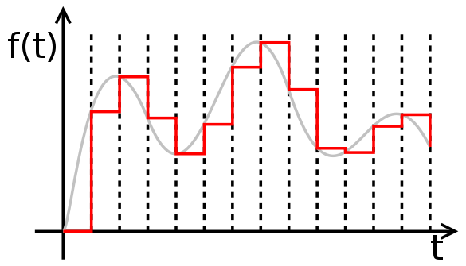
Architectures
Von Neumann架构
核心思想: 顺序处理，Stored- program 存储程序。程序和数据放在同一个内存里，通过同一套总线和CPU交换
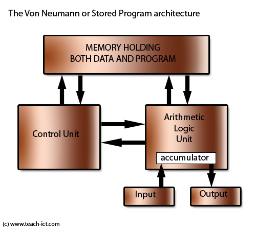
每一步要访问内存两次：一次取指令，一次取或写数据。因为只有一条路，这两次只能一前一后进行
CPU越快，由于内存相对较慢因此等待的比例越大，解决办法：
Caching：把常用数据放在离CPU更近更快的cache里
Prefetching：在CPU真正需要之前把数据搬进cache
Multithreading：一个线程在等内存时，CPU先去做另一个线程的事
Harvard架构
核心思想：并行处理，CPU在取下一条指令的同时，可以读写数据
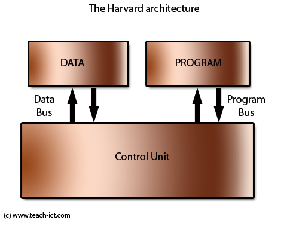
优点：
缺点：
更贵，更复杂，两套内存和两套总线
内存空间是固定的，指令区只能放数据
不够灵活，程序不能把指令当数据来修改
Modified Harvard架构
结合两种架构
CPU内部，有分开的指令cache和数据cache，都是分层的L1，可以同时取指令和取数据
CPU外部，两者共用一块主存RAM，像 Von Neumann 一样灵活、便宜
Split-cache：上面讲的，cache 分开、主存统一
Instruction-memory-as-data：允许把指令内存当数据来读，比如从程序存储器里读一张常量表
Data-memory-as-instruction：允许执行数据内存里的代码
CISC and RISC
指令的结构：Opcode操作码(做什么) + Operands操作数(对谁做)
Runtime = 指令数 × 每条指令的周期数（CPI） × 时钟周期时间
CISC想减少指令数：一条指令做很多事
RISC想减少CPI：每条指令简单、执行快
CISC — Complex Instruction Set Computer
指令多，单条指令功能强，一条指令可以完成取数 + 计算 + 存回
长度不固定，解码复杂
高功耗
靠硬件优化
需要更少RAM
寻址方式多
代表: Intel x86 / AMD、IBM System/360
RISC — Reduced Instruction Set Computer
指令少简单，一个时钟周期左右完成
长度固定，解码简单，可以做pipeline
功耗低
靠编译器优化
需要更多RAM
Load/Store 架构：只有 LOAD 和 STORE 能访问内存，计算只在寄存器之间进行
代表：ARM(手机、Raspberry Pi)、Apple M1–M4、RISC-V
Pipelines 流水线
pipelines让CPU运行更快，因为它把多条指令的不同阶段重叠起来做
公式
无流水线: 总时间 = n * k * T
有流水线: 总时间 = (k+n-1) * T ——在一条k个阶段的流水线上，n条指令全部执行完一共需要多少个时钟周期
运行方式如下图
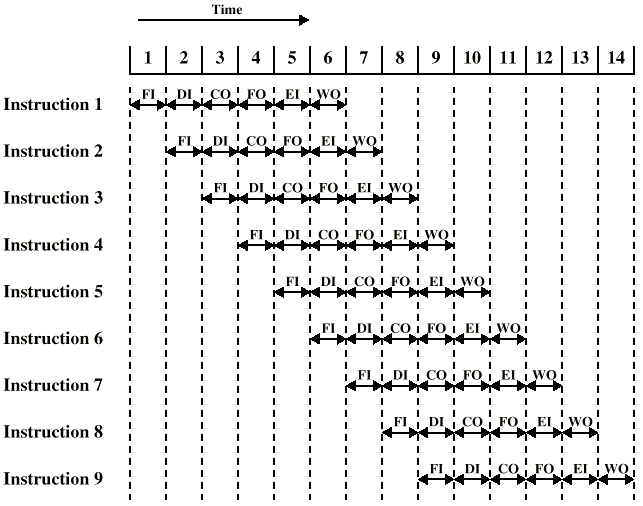
Hazards 冒险
Data Hazards 数据冒险
后一条指令要用前一条指令还没算出来的结果
Example:
I1: DIV R1, R2 ; 结果写进 R1
I2 在 Decode 阶段就要读 R1，但这时 I1 还在 Execute，R1 的值还没出来
pipelines会发生 stall停顿
解决方法:
Data forwarding 数据前递
加一条通道，把 ALU 的输出直接送给下一条指令的 ALU 输入，不用等写回寄存器
代价是需要额外的冒险检测逻辑以及多路检测器
Stall/bubbles 硬件等待
instruction reordering 编译器重排指令
编译器在生成机器码时发现依赖关系，把不相关的指令塞到中间，填补空档
缺点是不一定总能找到可以挪的指令
Contro Hazard 控制冒险
if-else中例如jump to L1，但是分支的结果要到 Execute 阶段才知道，可是 Fetch 阶段每个周期都要取一条新指令。在结果出来之前，CPU 只能先猜一个方向接着取
Example：
T5 ：取 IX（“if false, jump to L11”）T6、T7 ：CPU 不知道结果，就按顺序继续取了 I6、I7T7 ：IX 到达 Execute，结果出来了：要跳到 L11所以 I6、I7 是白取的，必须flush清空。T8 重新从 I10 开始取
因此 T8、T9 里有空格
flush 的深度取决于分支走到第几个阶段才出结果
jump和Branch的区别
Jump 无条件跳转，目标地址在Decode 阶段就知道，只浪费 1 条指令
Branch 条件分枝，要等 Execute 阶段算出条件，浪费更多
解决方法：
Branch Prediction 分支预测
Delayed Branching 延迟分支
编译器就从分支前面挑一条和分支结果无关的指令，挪到分支后面的位置，被执行
类似于编译器重排
Superscalar 超标量
What is superscalar? 什么是超标量
一个时钟周期可以同时执行多条指令
T1: C = a + b
T2: D = e * f
传统上是先执行T1，再执行T2
因为他们不互相依赖，所以可以按这个方式执行:
Limitations
Instruction level parallelism 指令级并行度
Compiler based optimisation 编译器优化
Hardware techniques 硬件技术
如果CPU上没有足够的执行资源来一次执行多个指令，那么这在物理上是不可能发生的
受以下限制:
True Data Dependency (Read-After-Write) 真数据依赖
当多个指令使用同一个寄存器，只能等待
R0 = R1 + R2R3 = R0
Procedural Dependency 过程/控制依赖
类似于真数据依赖，不过是分支绝了寄存器的内容
IF R0 = 1 THEN
R2 = R2 + R1
Resource Conflict 资源冲突
当两个指令同时需要相同的资源时
示例：如果两个指令需要 ALU
Antidependency (Write-After-Read) 反依赖
R3 = R3 + R5
R4 = R3 + 1
R3 = R5 + 1
(3)不能在(2)之前执行，因为(2)需要R3的旧值, (3)覆盖了R3。这是反依赖。这可以通过重命名寄存器来修复
Output dependency (Write-After-Write) 输出依赖
R3 = R3 + R5
R3 = 1
如果(2)在(1)之前完成，那么(1)将有错误的输出。这是输出依赖性, 这可以通过重命名寄存器来修复
Buses and Interconnects 总线与互连
Buses 总线
电脑中的所有设备需要连接
这些连接被称为Buses
就像一个单元传输到另一个单元的路径
主板上的traces走线，线缆都是buses
Bus width 位宽:一次能同时传多少 bit。例如数据总线 64 位,地址总线 48 位就是64位电脑
Bus speed 速度:用 GT/s(每秒传输次数)衡量
总线是共享的，多个设备同时想用怎么办
Bus master总线主控:当前发起传输的设备
Bus arbitration:决定下一个谁当master
两种方式：
centralized 集中式：用一个专门的arbiter仲裁器，设备发 Bus Request, 仲裁器选一个并回Bus Grant
distributed 分布式: 没有中央仲裁器,每个设备自带控制逻辑, 多个设备同时申请时优先级最高者获得总线
总线有两种方式
Dedicated 专用
Multiplexed 复用
同一组线分时传不同信号。优点是线少, 缺点是会有轻微延迟
Buses Type 总线类型
Address Bus 地址总线
单向 CPU→内存I/O
作用：告诉memory要读写哪个位置
width决定了可以寻址的空间:n位地址线→2ⁿ 个地址
8080的16位地址线→2¹⁶ = 65,536 个地址,每个地址对应 1 字节 → 64 KB
现代CPU用48-52位物理地址，256TB到4PB
Data Bus 数据总线
双向传输，传输数据和指令
width常见8/16/32/64位，现代PC内存常用64位
Contro Bus 控制总线
双向传输，传输状态和命令还有时序，实际由多条单线组成
常见信号：
Clock:同步所有操作
Memory Read:把指定地址的内容放到数据总线
Memory Write:把数据总线上的内容写入指定地址
Bus request:设备申请用总线
Interrupt Request:出错请求 CPU 处理
Data Bus
Address Bus
Control Bus
作用
传数据
传地址
协调控制
方向
双向
单向(CPU→内存/IO)
双向(由多条单向线组成)
位宽含义
一次传多少数据
最大可寻址内存
线数不固定
何时活跃
数据传输阶段
总线周期开始时
每次操作都在变化
Read and Write 读写流程
Read:
CPU 把地址 1001001 放到 Address Bus
给出Read信号 control bus
内存把该地址的内容 1101001 放到 Data Bus
CPU 取走
Write:
CPU 把地址 1001100 放到 Address Bus,同时把数据 1111111 放到 Data Bus
给出Write信号
内存里 1001100 的内容从 0000000 变成 1111111
Serial and Parallel 串行与并行
Serial 串行
Parallel 并行
线数
1条
n条
每周期传输
1 bit
最多n bit
成本
低
高
适合
长距离
低距离
高频表现
好
差
现在几乎都是Serial串行
因为Parallel在高频下会
clock skew时钟偏斜:个条线上信号到达时间有差异，位对不齐
Crosstalk串扰：相邻导线互相干扰
Chipset 芯片组
经典架构(1990s-2000s) Northbridge + Southbridge
Northbridge(北桥):连接 CPU、RAM、显卡, 处理高速数据。CPU 与北桥之间的总线叫 FSB(Front-Side Bus)
Southbridge(南桥):管 I/O,如硬盘、USB、声卡、网卡。它接在北桥上, 不直接连 CPU
瓶颈: CPU、内存、显卡的数据全挤在 FSB 这一条共享总线上
现代架构(2010s至今)
内存控制器和显卡通道集成进 CPU, CPU 直连 RAM 和显卡, 北桥消失, 瓶颈也随之消除
南桥演变为 PCH(Platform Controller Hub), 通过高速链路(如 Intel 的 DMI)直连 CPU, 管理 SATA、USB 等慢速外设
结果: 延迟更低、带宽更高
RAID 独立硬盘冗余阵列
What is RAID 什么是独立硬盘硬盘冗余阵列
RAID代表独立硬盘冗余阵列，但现在它代表独立磁盘冗余数组
它们是在多个物理驱动器上分发数据的方式
RAID 0 纯条带
不同的“条带”分散存放在所有硬盘上
容量是 N × 单盘容量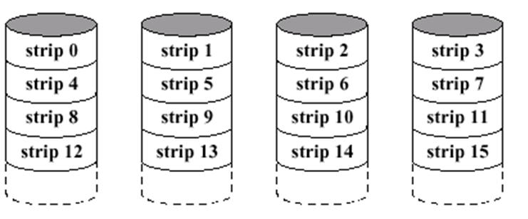
RAID 1 镜像
两个硬盘互为映象
如果其中一个坏了，直接换一块新盘，再重新做镜像
容量是 N × 单盘容量 ÷ 2（因为总存储空间只用了 50%）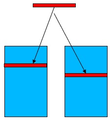
RAID 1+0 先镜像再条带
先用 RAID 1 把每块盘都做成镜像对，再把这些镜像对当作一块块独立的盘，在上面组 RAID 0
容量：N / 2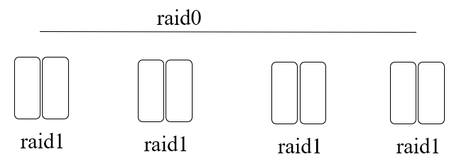
RAID2、3、4
RAID 4:
有点像RAID 0，只是条带的单位换成了块
专门拿出1块硬盘做校验盘
RAID 2,3,4 现在都已经不再使用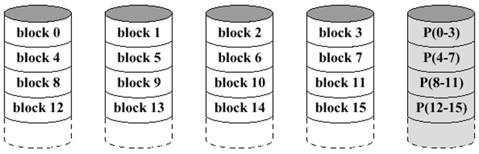
RAID 5
和 RAID 4 类似，但校验块是用round robin 轮转的方式分配到各块数据盘上的
校验用的是 XOR 的恢复机制。在 XOR 真值表里，如果丢了一列，把剩下两列的位做 XOR，就能得到缺失的那一位
虽然校验分散在多块盘上，可用容量仍然是 N − 1 块盘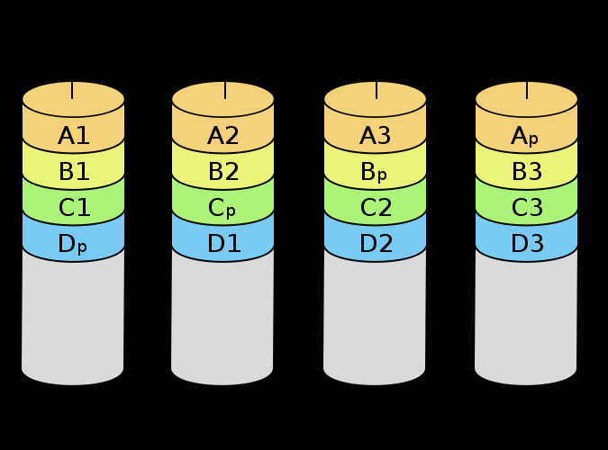
RAID 6
和 RAID 5 类似，但每个条带要写两份校验，所以能容忍两块盘同时坏掉
容量是 N − 2 块盘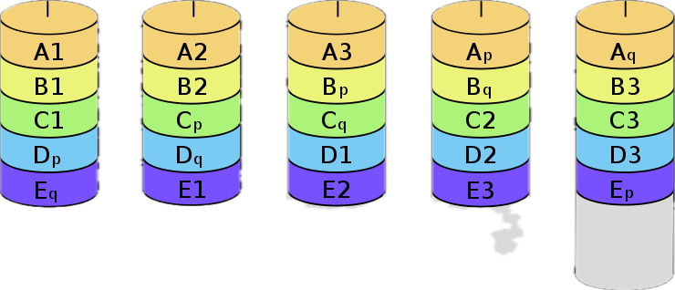
Compare Table
RAID 级别
最少盘数
容错能力
可用空间
读取性能
写入性能
RAID 0
2
无
N × 单盘容量
极好
极好
RAID 1
2
极好
1 × 单盘容量
极好
好
RAID 5
3
好（可坏 1 块盘）
(N−1) × 单盘容量
极好
一般
RAID 6
4
很好（可坏 2 块盘）
(N−2) × 单盘容量
极好
差
RAID 10(1+0)
4
极好
(N/2) × 单盘容量
极好
极好
Memory and RAM 内存
Primary Memory and Memory Hierarchy 主内存与内存层次结构
层级从上到下：Registers → L1 → L2 → L3 → RAM（DRAM）→ SSD/HDD
越往上越快、越小、每 bit 越贵，越往下越慢、越大、越便宜
Primary memory 指 CPU 可以直接访问的存储，包括 registers、cache 和 RAM
硬盘或 SSD 属于 secondary storage，CPU 不能直接读，数据要先拷进 RAM
RAM 内存
Read/Write：可读可写
Volatile：断电后数据全部丢失
Temporary storage：只用来临时存放
Dynamic or Static：分为 DRAM 和 SRAM 两种
SIMM / DIMM / RIMM 内存条
SIMM
DIMM
64 bit/次，两面各一组独立针脚
现在正在使用
RIMM
16 bit/次，靠很高的频率来弥补
已经不再使用
DRAM and SDRAM and SRAM
DRAM
每个 bit 由1个电容加1个晶体管组成，电容里有电荷表示 1，没有表示 0
一断电，电容就放空，数据立刻丢失
电容会漏电，所以必须每秒刷新几千次
专用DRAM:
GDDR：显卡专用，带宽极高，功耗也高，焊在 GPU 板上，不能拆换。最新一代是 GDDR7
LPDDR：手机、平板、轻薄本用，低功耗优先，也是焊死的。例如 Raspberry Pi 4 用 LPDDR4，Pi 5 用 LPDDR4X
SDRAM
早期 DRAM 是 asynchronous异步的，按自己的节奏运行，不跟系统时钟同步，所以和CPU配合效率低
SDRAM是synchronous同步的，跟系统时钟对齐，所以和 CPU 配合得很好
SRAM
每个 bit 用4–6 个 transistor 组成的 flip-flop触发器来存
没有电容，不会漏电，所以不需要 refresh，只要不断电
更快，但结构复杂、每个 bit 占的面积大、价格贵
用途是CPU 里的 L1/L2/L3 cache
对比
Feature
DRAM
SRAM
Data storage
1 transistor + 1 capacitor / bit
Flip-flop, 6 transistors / bit
Refresh needed
Yes （电容漏电）No
Speed
较慢（tens of ns）
很快（ns range）
Density
高（单位面积存更多 bit）
低
Power
总体较高（因为要刷新）
空闲时低，工作时高
Cost per bit
便宜
贵
Typical use
Main memory（RAM modules）
Cache memory（L1, L2, L3）
Location
独立的内存条（DIMMs）
在 CPU 芯片上
Data retention
Volatile Volatile
带宽计算
64 bit 的总线 = 64 ÷ 8 = 8 Byte宽
带宽 = 频率 × 8 Byte
PC-100：100 MHz × 8 B = 800 MB/s
PC-133：133 MHz × 8 B ≈ 1066 MB/s
SDR and DDR
SDR SDRAM：只在时钟的rising edge上升沿传一次数据，所以每个周期传 1 次
DDR SDRAM：在rising and falling edge各传一次，所以每个周期传 2 次。时钟频率相同时，DDR 的速度是 SDR 的两倍
DDR-333 = PC-2700：333 × 8 ≈ 2700 MB/s
每一代DDR都更快、容量更大、电压更低，而且缺口位置都不一样，所以各代之间不能混插
既然所有 DIMM 每次都只传 64 bit，为什么 DDR5 比 DDR1 快？
每次传输的宽度一样，但 DDR5 的频率高得多，每秒能传更多次 64 bit，所以带宽更高
DIMM 有 184–288 个针脚，为什么每次只传 64 bit？
其中只有64 根是数据线，其余的针脚负责供电、控制信号、地址等
Parallel Processing 并行处理
Speedup 加速比
Speedup = 旧时间 ÷ 新时间
程序原来跑 20 分钟，现在跑 15 分钟，Speedup = 20 / 15 = 1.33 ，也就是快了 1.33 倍，或者说提速 33%
Amdahl’s law 阿姆达尔定律
并行后的运行时间:
Tp = 完成任务所需的总努力（时间）
Ws = 绝对必须按顺序完成的位
Wp = 可以并行完成的位
P = 核心数量
加速比
s = 顺序部分占的比例（只能 1 个处理器做）
p = 可并行部分占的比例，s + p = 1
n = 处理器个数
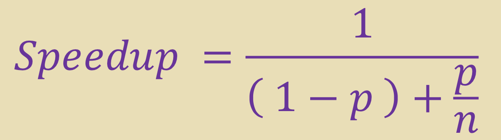
上限speedup
s = 顺序部分占的比例（只能 1 个处理器做）
最大speedup = 1/s
直觉上，会认为核心越多，电脑就越快。
实际上，由于Amdahl定律，随着核心数量的增加，处理能力有限: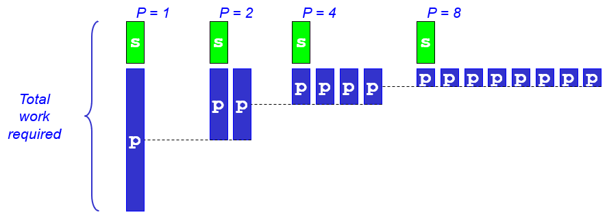
Amdahl定律表明，在CPU的更大部分应用小速度比在CPU的小部分应用大速度效率更高
程序的顺序部分比例决定了加速的上限
N 核 CPU 不可能比同频率的单核快 N 倍
Multiprogramming and Multiprocessors 多道程序与多处理器
Multiprogramming多道程序: 程序 A 等 I/O 时，CPU 切去跑程序 B，B 等的时候再跑 C，这叫interleaving交错
Multiprocessing双处理器: 处理器 1 跑 A，处理器 2 跑 B 和 C, 这叫overlapping重叠
交错 = 并发（轮流做），重叠 = 并行（同时做）
Flynn分类法
单数据SIngle Data
多数据Multiple Data
单指令
SISD
SIMD
多指令
MISD
MIMD
SISD 单指令单数据
一个处理器，一条指令流，处理一份数据。就是传统的单核顺序计算机
用途：传统软件、简单脚本，没有并行性的算法
SIMD 单指令多数据
同一条指令同时作用在很多份数据上，各处理单元步调一致lockstep
代表：向量处理器、阵列处理器
用途：图形与游戏（矩阵、光照）、图像滤镜、机器学习的矩阵乘法、音视频编解码
比喻：老师对全班说把你白板上的数加 5。指令只有一条，数据有很多份
MISD 多指令单数据
多个处理器对同一份数据执行不同的指令
没有商业化实现
用途：对可靠性要求极高的系统（飞控、太空探测器，多个单元冗余地计算和核对），以及学术研究
比喻：几个技师同时检查同一辆车，有的查刹车，有的查发动机，有的查车灯
MIMD 多指令多数据
多个处理器各自执行不同的指令，处理不同的数据，最灵活，适用于任何应用
代表：SMP对称多处理器、集群、NUMA 系统，以及现代多核 CPU
用途：Web 服务器同时处理多个请求、数据库并发事务、科学计算集群、云计算虚拟机
比喻：厨房里几个厨师，一个煎牛排、一个拌沙拉、一个做酱汁
Cache 缓存
Definition 定义
Cache是一小块存储器，用来加快读取内存数据的速度
有时候，从 RAM 中读取数据还不够快，这就是要使用缓存的原因
缓存会存放经常使用的数据，这样 CPU 就能更快地取到这些数据
缓存位于 RAM 和 CPU 之间，有时甚至直接集成在 CPU 芯片上
Hit：在 cache 里找到数据；Miss：没找到，要去主存取
Hit Rate = 命中次数 ÷ 总访问次数 × 100%
Miss Rate = 1 − Hit Rate
Hit Time：访问 cache 本身花的时间
Miss Penalty：miss 时去主存取数据额外损失的时间
AMAT = Hit Time + Miss Rate × Miss Penalty 平均访问时间
Cache工作流程
CPU 请求某个内存地址的数据
先查 cache
找到了hit：直接从 cache 取，很快
没找到miss：从主存读取一整块block到 cache，再交给 CPU
cache 里有 tag，用来标记每个 slot 里存的是主存的哪一块
三级缓存
L1、L2 是每个 core 私有的，所以为速度做了优化
L3 由所有 core 共享，作用是 “shield” RAM，减少对 DRAM 的访问，同时方便 core 之间交换数据
Feature
L1 Cache
L2 Cache
L3 Cache
Speed
最快（Fastest）
快（Fast）
中等（Moderate）
Size
最小
中等
最大
Typical capacity
16–128 KB / 核
128 KB–2 MB / 核
2–384 MB 总计
Access time
~1–4 cycles
~4–12 cycles
~20–50 cycles
Location
在每个 core 内部，离 core 最近
同一芯片上，紧挨 core
同一芯片上，所有 core 共用
Sharing
Private （每个 core 独有）通常 private（部分架构共享）
Shared （所有 core 共享）
Purpose
存最常用的指令和数据
中间层，减少访问主存
大容量共享池，减少所有 core 访问 DRAM
Logical
Transistors 晶体管
Transistors are small semiconductor devices that amplify or switch electronic signals. They have 3 main uses: 晶体管儿是放大，切换电子信号的小型半导体器件
as an electronic switch within a circuit 作为电路中的电子开关
to switch on another part of a circuit when a change in resistance of a sensor device is detected 当检测到传感器设备的电阻变化时，打开电路的另一部分
as an interface device, to receive signals from low current devices (such as ICs) and use these to turn on high current devices (such as motors) 作为接口设备，接收来自低电流设备（如IC）的信号，并使用这些设备打开大电流设备（如电机）
In the CPU, they are used to make logic gates CPU中被用作制造逻辑门
Logic’s relation to electronics
Current passes through(Low voltage低电压)––>1. 电流通过则用1表示
Current not passes(High voltage高电压)––>0. 电流断开用0表示
Logic notation
相关：COMP1311 逻辑连接词
and . are used for OR/AND
A + B means A or B
A . B means A and B
¬ can be used as ‘NOT’,
⊕ can be used as ‘XOR’ or EXOR
A ⊕ B means A exclusive or B
Truth table
相关：COMP1311 构造真值表
A
B
Y
0
0
0
1
0
0
1
1
1
0
1
0
Logic gates
Gate
Explanation
AND
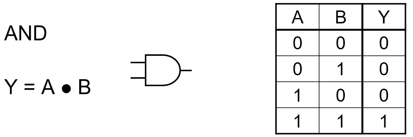
OR
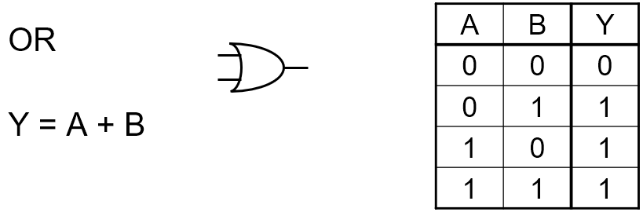
NAND
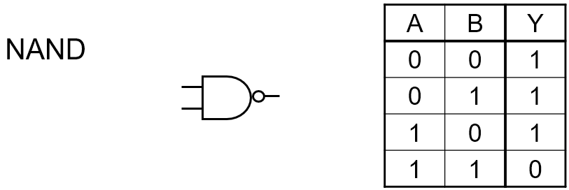
NOR
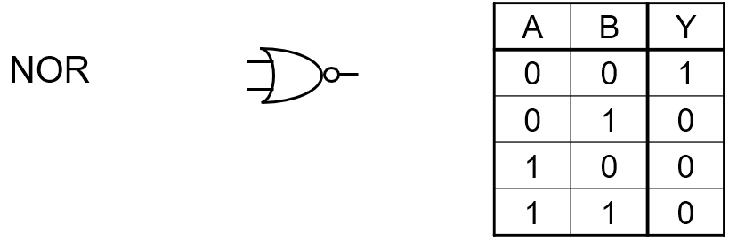
XOR
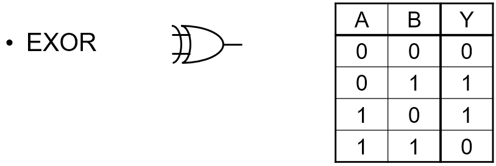
Can make ANY gate out of NAND/NOR gates 可以用NAND门或者NOR门构造所有其他门
Boolean algebra 布尔代数
Valid for OR, AND, and XOR:
Associative 结合律
A + (B+C) = (A + B) + C
A . (B . C) = (A . B) . C
Distributive 分配律
A . (B + C) = (A . B) + (A . C)
A + (B . C) = (A + B) . (A + C)
Commutative 交换律
Absorptive 吸收律
A . (A+B) = A
A + (A . B) = A
Demorgan’s theorems 德摩根定律
¬(A + B) = ¬A . ¬B
¬(A . B) = ¬A + ¬B
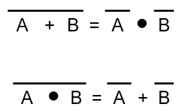
Break the line, change the sign 拆开顶线，改变中间符号
A + B 取反，表示A或B至少一个成立这件事不成立，也就是A不成立并且B不成立，即 Ā · B̄
K-map
圈内有变化的去掉，如果一直为0的话就写反，一直为1就取正
Flip-flops and Registers
flip-flops 是一个存储1为数据的电路
一共有3种类型
组合电路combina circuit 和 时序电路 sequential circuit
组合电路
时序电路
输出取决于
只看当前输入
当前输入+过去状态
有记忆吗
没有
有
例子
加法器
触发器
需要时钟吗
不需要
通常需要
Rest-set flip flops(SR) 基本锁存器
一种使用reset复位 和 set设置 的输入的flip flops, 由NAND 或 NOR gates组成
输出结果为 Q存储的值 ; Q(NOT Q) Q的相反值
S
R
result
0
0
保持上一次的状态
1
0
Q=1 置位
0
1
Q=0 复位
1
1
禁止
Gated Latch 门控锁存器
在基本锁存器上加一个时钟输入
CLK = 0 时 S和R不起作用，锁存器保持原状态
CLK = 1 时 S和R恢复正常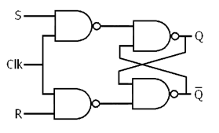
D-type flip flop D锁存器——常用
解决了SR的缺陷，在S和R之间加了一个反相器(NOT), 只保留一个输入D(Data)
D当作S
NOT当R
S和R永远相反，这样就不会出现无效状态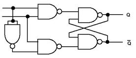
Register 寄存器
registers的本质是几个flip flops触发器并排放在一起
寄存器通常用作处理器中的临时存储，因为：
它们比主存储器更快、更方便
更多的寄存器可以帮助加快复杂的计算速度
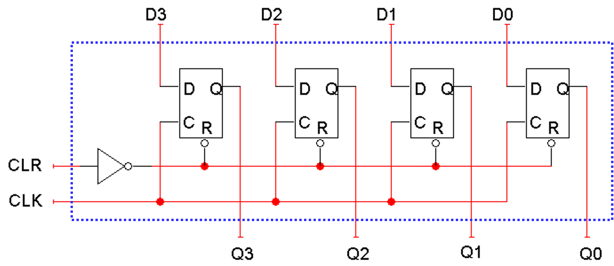
4 位寄存器 = 4 个 D 触发器。用法:把数据放在 D0–D3 上,然后给一个时钟脉冲把它存进去
Shift Register 移位寄存器
类型
输入
输出
典型用途
SISO
串行 1次1位
串行
延迟数据
SIPO
串行
并行
接收串行数据:串行设备每个时钟送 1 位,4 个时钟后 4 位凑齐,CPU 一次读走
PISO
并行
串行
发送串行数据:CPU 先一次装入 4 位,再每个时钟移出 1 位。有 load 和 shift 两种模式
PIPO
并行
并行
就是普通寄存器。例:老式并行打印口,一次接收 8 位
移位的算术/逻辑用途
移位在算数中: 左移1位 = *2 右移1位 = /2
以11010001为例子
操作
规则
结果
Logical right shift 逻辑右移
右移，最高位补0
01101000
Arithmetic right shift 算数右移
右移，最高位保持符号位不变
11101000
Right rotate 右循环
右移，移出的最低位绕回最高位
11101000
Logical left shift 逻辑左移
左移，最低位补0
10100010
Arithmetic left shift 算术左移
左移，最低位补0
10100010
Left Rotate 左循环
左移，移出的最高位绕回最低位
10100011
CPU中寄存器种类
通用/数据/地址寄存器：
general purpose通用寄存器：用来存放数据，做运算
Data数据：只存取数据，不能运算
Address 地址：专门存放地址，例如栈指针stack pointer
Condition codes：CPU在算数/逻辑运算后自动设置的标志
控制寄存器：
PC(Program Counter):下一条要取的指令的地址
IR(Instruction Register):刚取回来的那条指令
MAR(Memory Address Register):要读/写的内存地址
MBR(Memory Buffer Register):要读/写的数据
Example：
Load a into r1 ← 把内存里的 a(=2) 读入寄存器r1
Load b into r3 ← 把内存里的 b(=3) 读入寄存器 r3
r2 ← r1 + r3 ← ALU 相加,r2 = 5
Store r2 into c ← 把r2写回内存的c
Arithmetic
进制转换
十进制转二进制
把数除以2
取整数商，当作下一轮要除的数
取余数，当作一个二进制位
重复直到商为0
二进制转十进制
写下二进制数，从右往左给每一位标上2的幂，从0开始20 2 1 2^2
每一位的数字乘以它对应的2的幂，最左边MSB乘的最大
把所有乘积加起来0 + 0 * 2 1+ 0 * 22 + 1 * 2 3 + 1 * 24 + 1 * 2 5
二进制运算
二进制加法
二进制减法
减法和竖式减法一样
0 - 1的时候需要借位，借位借到的是两个1
二进制乘法
二进制除法
比较除数和被除数当前部分
如果除数更小或相等，商写1，用除数作为要减去的数，从当前部分中减去，得到余数（类似于10进制数除法）
把被除数的下一位写下来，再重复第一步
一直重复，直到余数为0，或者被除数的所有位都用完
Signed integers 有符号整数和无符号数
相关：COMP1312 Data type
A signed integer is an integer that can be negative. The range of values it can be is usually sacrificed to allow negative numbers, compared to unsigned integers. 与无符号整数相比，值范围变小
An unsigned 8-bit integer can hold values between 0 to 255 无符号8位整数
A signed 8-bit integer could hold values between -128 to 127. 有符号8位整数
n 位无符号数能表示的范围是 0 到 2ⁿ − 1
有符号数范围是 −2ⁿ⁻¹ 到 2ⁿ⁻¹ − 1
同一串数字按无符号读和按补码读结果完全不同
有符号数加法:
和无符号做法完全一样
无符号:1011 + 0011 = 1110,即 11 + 3 = 14
补码:1011 + 0011 = 1110, 按补码读 1011 = -5,1110 = -2,即 -5 + 3 = -2
有符号数减法:
加上负数数的补码
把 25 = 0011001 取补码得 1100111(-25),再做 0100111 + 1100111 = 0001110(高位溢出的进位丢掉)= 14
Sign and Magnitude 原码
最高位（MSB）表示正负(最左侧)，1为正，0为负
Example:
11011, 十进制表示为-11
01011, 十进制表示为11
不太可能用来做数学，最高位只是用来表示符号
2’s Complement 补码
1’s Complement 反码
负数需要把正数每一位都取反
Example:
Similar to 2’s complement
Floating point
相关：COMP1312 Data type
Floating points are binary numbers that represents fractions 浮点数是表示分数的二进制数
分为三部分:
Sign符号位 1bit
Base 底数
Exponent 指数 小数点要偏移多少位
Mantissa(fraction) 尾数 有效数字
存储布局:
sign | Exponent | Mantissa
这是存储顺序,不是科学计数法的书写顺序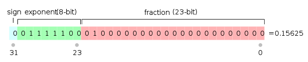
假设数字01101 000011,步骤按以下进行
切开尾数和指数
两个分别按补码读出，注意第一位的sign，0代表正，1代表负
读出的尾数*2的指数
尾数 0.1101,指数 000011 = 3 → 0.1101 × 2³ → 小数点右移 3 位 → 110.1 = 4+2+0.5 = 6.5
尾数小数点后的数位见下表
Decimal representation
1
.
1/2
1/4
1/8
1/16
1/32
1
.
0.5
0.25
0.125
0.0625
0.03125
Adder 加法器
Half Adder 半加器
将两个1位数相加输出Sum和Cout
Truth Table:
A
B
Sum
Carry
0
0
0
0
0
1
1
0
1
0
1
0
1
1
0
1
1 + 1 = 0, carry 1
Sum = A ⊕ B (XOR异或: 两个输入不同为1)
Carry = A · B (AND与:两个都是1才为1)
Half Adder = XOR + AND
Full Adder 全加器
将三个1位数相加，其中来自两个数字，另一个为来自进位，输出Sum和Cout
Truth Table:
规律:Sum = 3个输入里 1 的个数是奇数时为 1
布尔表达式
Sum = A ⊕ B ⊕ Cin
Cout = A·B + A·Cin + B·Cin
实现方式:
2 个半加器 + 1 个 OR 门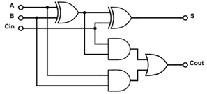
Ripple Carry Adder 行波进位加法器
ARM Assembly ARM汇编语言
ARM instruction set ARM指令集
完整的ARM指令集使用32位指令
另外还有Thumb指令集，它是完整 ARM 指令集的一个子集，每条指令用 16 位存储
Thumb 指令只能使用 ARM 寄存器中的一部分（只有 r0 到 r7、sp、lr 和 pc）
针对 C 代码编译后的代码密度做了优化（代码体积约为 ARM 的 65%，所以适合小型系统）
处理器可以混合运行 ARM 代码和 Thumb 代码
Thumb-2
Thumb-2 是对 Thumb 指令集架构（ISA）的扩展，完整保留了 16 位的 Thumb 指令集
它加入了 32 位指令，几乎实现了 ARM 指令集的全部功能，速度比 Thumb 快约 25%
ARM registers ARM寄存器
16 个 32 位寄存器 R0–R15
其中 3 个是“特殊“寄存器：
R0-R12 通用寄存器，用来存放计算用的数据
R15：程序计数器（PC）, 存放下一条要执行的指令的地址。修改 PC 就等于跳转
R14：链接寄存器（LR）, 用 BL 调用函数时，返回地址会自动存进 LR。函数结束时用 BX LR 跳回去
R13：栈指针（SP）, 指向栈顶。栈是内存里的一块区域，用来存局部变量、函数参数和返回地址
当前程序状态寄存器（CPSR）, 存 4 个标志位，分别是 N （结果为负）、Z （结果为零）、C （进位）、V （溢出）
Simple instruction examples 简单指令示例
mov r2, r1
r2 = r1
指令
含义
MOV Rd, #imm放入立即数，如 MOV R0, #5
MOV Rd, Rm复制寄存器，如 MOV R0, R1 → R0 = R1
LDR Rd, [Rn]从内存读，如 LDR R1, [R0] → R1 = Mem[R0]
STR Rd, [Rn]写入内存，如 STR R2, [R0] → Mem[R0] = R2
ADD Rd, Rn, Rm加法，如 ADD R0, R1, R2 → R0 = R1 + R2
SUB Rd, Rn, Rm减法，如 SUB R0, R1, R2 → R0 = R1 − R2
MUL Rd, Rn, Rm乘法，如 MUL R0, R1, R2 → R0 = R1 × R2
AND Rd, Rn, Rm按位与，如 AND R0, R1, R2 → R0 = R1 AND R2
AND Rd, Rn, #1判断奇偶：结果 0 为偶数，1 为奇数
例：AND R0, R1, #1 → 1010 AND 0001 → R0 = 0（偶数）
CMP Rn, Rm：比较寄存器，不保存结果，只设置标志位，内部计算 Rn − Rm
Rn = Rm → Z 标志置位
Rn > Rm → N 标志清零
Rn < Rm → N 标志置位
Branches 跳转
指令
含义
B label无条件跳转，忽略所有条件，总是跳转
BGE label上一次比较的结果大于等于 0 时跳转（有符号）
BGT label上一次比较的结果大于 0 时跳转（有符号）
BLE label上一次比较的结果小于等于 0 时跳转（有符号）
BLT label上一次比较的结果小于 0 时跳转（有符号）
BEQ label上一次比较的两个值相等时跳转
BNE label上一次比较的两个值不相等时跳转
条件跳转的格式是 B{cond} label，即 B 加一个条件后缀
例：
Loop: MOV R0, # 1 Status register 状态寄存器
sub R1, R2, R3：R2 减去 R3，结果放进 R1
subs R1, R2, R3：做同样的运算，但还会设置状态寄存器的标志位
状态寄存器的标志位可以用于条件跳转，所以 subs 更好
Arithmetic 算术例子
Add 加法
= 2 ; = 3 ; = 4 ; = b + c + d; MOV R6, # 2 MOV R5, # 3 MOV R4, # 4 , R6, R5, R3, R4If-else 判断
if ( x > 0 ) { = 1 ; } else { = 2 ; } CMP R4, # 0 MOV R5, # 1 case2: MOV R5, # 2 end: MOV R0, R5
x 放在 R4。CMP 设置状态寄存器，BLE（小于等于时跳转）根据它决定是否跳到 case2
Memory access 内存访问
MOV r1, #TableLDR r0, [r1]把 Table 的地址放进 r1
LDR r0, [r1, #8]r1 里的地址加 8，再读一个 word
方括号 [r1] 表示 r1 里存的是地址，要去那个地址取数据
用标签 Table 而不是固定地址（如 23000），程序放在内存哪里都能运行
加偏移可以在不改 r1 的情况下读 Table 附近的数据，例如数组的其他元素
偏移以字节为单位，1 个 word = 4 字节，所以 [r1, #8] 实际是 Table[8]
实际写代码时，取地址一般用 LDR r1, =Table
Subroutine 函数调用
MOV R0, # 10 @ 设置参数MOV R1, # 3 @ 调用下面的子程序do_add: ADD R0, R0, R1 @ 子程序代码@ 从子程序返回
BL = Branch with Link（带链接的跳转）BX = Branch and Exchange（跳转并交换）
Compile & run 编译和运行 树莓派
gcc -o prog prog.s # 把 prog.s 编译成名为 prog 的程序 gcc -o prog prog.s m.s # 把 prog.s 和 m.s 一起编译成 prog main: MOV r0, # 3 MOV r1, # 4 ADD r0, r0, r1gcc -o asm1 asm1.s./asm1 echo $? # 输出 7
r0 的值会作为程序的结果返回，可以用 shell 的返回值查看
$? 是 shell 中上一条命令的状态值返回值最多只有 1 字节，因为它本来是用作退出码的，所以可能溢出
32-bit weirdness 大立即数
ARM 指令是 32 位，MOV 的立即数字段只有 12 位
MOV R1, #1000000 会失败大数要用 LDR R1, =1000000
Looping 循环
= 0 ; = 1 ; while ( R2 <= 22 ) { += R2; += 1 ; } main: mov r1, # 0 @ r1 ← 0 ，存放总和mov r2, # 1 @ r2 ← 1 ，计数器loop: cmp r2, # 22 @ 比较 r2 和 22 @ 如果 r2 > 22 ，跳到 endadd r1, r1, r2 @ r1 ← r1 + r2add r2, r2, # 1 @ r2 ← r2 + 1 end: mov r0, r1 @ r0 ← r1
MOV R0,#20 @ 计数器 R0 = 20
next: @ 循环体开头（标签）
…
…
SUBS R0,R0,#1 @ 计数器减 1，并更新标志位
BNE next @ 结果不为 0 就跳回 next
减到 0 时 Z 标志被置位，BNE 不再跳转，循环结束。因为用了 SUBS，所以不需要另写 cmp
Printing 打印
data 4 fmtstring: .asciz "%d\n" num: .int 0 main: push { ip, lr} , = 1000000 mov r0, # 2 mul r0, r0, r1mov r1, r0, = fmtstringpop { ip, pc} adr_num: .word numInstruction sets 指令集
Interpretation of binary data 二进制数据解释
二进制数字0100 0010可以解释为很多东西:
ASCII字符 B
内存地址66
一条机器指令
作为编程语言中的枚举类型，例如枚举颜色{红色、蓝色、绿色}
Instruction set 指令集
指令集就是处理器能执行的全部指令的集合
每个数字代表某个指令
这些指令通常通过助记符在组装中使用（指令的名称，例如，你可以说ADD而不是说0110）
Elements of an instruction 指令的要素
Operation code (op code or opcode) 操作码
Sources operand 派操作数
Result operand 结果操作数
Next Instruction reference 下一条指令
Instruction types 指令的类型
Arithmetic instructions 算数指令
ADD, SUB
签名整数
浮点
可能包含:
增量 (x = x + 1)
递减 (x = x – 1)
否定 (x = -x)
Data transfer 数据交换
在寄存器/内存/IO 之间搬数据
MOV, LOAD, STORE
Logical 逻辑
Control 控制
改变执行顺序
JUMP, CALL, RETURN
Instruction Length 指令长度
Fixed：好解码、快
Variable：紧凑、灵活
Number of Operands 操作数个数
常见 0–3 address，4-address 基本不用
地址越少，指令越短，指令条数越多
地址数
例子
关键点
例题条数
3
ADD X, A, B两个源 + 一个目的，原值不变
4
2
ADD X, AX 既是源也是目的，会被覆盖
6
1
ADD A另一个操作数隐含为 Acc
8
0
ADD操作数在 stack，两次 pop、一次 push
10
Addressable Registers 可寻址寄存器数
n bits → 2ⁿ 个寄存器
寄存器多越多，运行更快，但指令更长
Addressing Modes 寻址方式
Instruction set architectures (ISA) 指令集架构
Accumulator ISA 累加器型
存储结果为累加器，这是一个用于存储数学运算结果的特殊寄存器
Example:
ADD 5,6
5 + 6 = 11
11存储在accumulator中
所有运算都通过唯一的 AC 寄存器，结果写回 AC
累加器形的SUB tmp只能算AC − tmp，因此在遇到(A × B) − (C + D)这种情况下，要先计算C+D
Stack based ISA 栈型
使用堆栈来执行操作
Example:
例子：
你把7推到堆栈上
你把5推到堆栈上
你执行“SUB”操作：
7从堆栈中弹出
5从堆栈中弹出
7 - 5 = 2
2被推到堆栈上
Register-memory ISA 寄存器-内存型
一个操作数来自内存，一个来自寄存器
Example：
ADD R1、R3、B
其中B是主存储器中的位置，R1和R3是寄存器。
生成代码很简单，但代码是非交换的，所以源操作数可以被销毁。
使用此的系统：IBM 360/370、TMS320、英特尔x86、M68000
Register-register ISA 寄存器-寄存器型
两个操作数都是寄存器
Example：
ADD R1、R2、R3
其中R1、R2和R3都是寄存器
它很快，指令编码也很简单，但由于指令很简单，它们导致了更大的程序
使用这个的系统：Alpha、SPARC、ARM、PowerPC、Trimedia TM5200
Memory-memory ISA 内存-内存型
两个操作数都来自内存
Example：
ADD R1, A, B
其中A和B是内存中的位置，R1是寄存器
代码很紧凑，但速度可能会因内存获取而受到瓶颈
这个如今已经不再使用了
addressing modes 寻址方式
LD A #5“#” 表示后面的数就是数据本身
EA: 不适用，数据就在指令里
结果: Acc ← 5
不需要额外访问内存，最快，用于常数
缺点: 数值大小受字段为数限制
Direct 直接寻址
LD A 501指令里写的数据所在的内存地址
EA=地址字段=501
内存[501] = 6，所以 Acc ← 6
需要访问 1 次内存
如今已经不常用
Indirect 间接寻址
LD A (501)括号表示“到这个地址去取另一个地址“，相当于指针
内存[501] = 504，所以 EA = 504
内存[504] = 7，所以 Acc ← 7
需要访问2次内存，比较慢
好处：字段很短，也能间接指向很大的地址空间
Register Direct 寄存器直接寻址
LD A R1操作数在寄存器里
EA：不适用，数据在寄存器中
R1 = 8，所以 Acc = 8
不访问内存，完全在 CPU 内部完成，非常快
寄存器少，所以编译器要尽量把常用变量长时间留在寄存器里
Register Indirect 寄存器间接寻址
LD A (R1)寄存器里存的是内存地址
R1 = 501，所以 EA = 501
内存[501] = 9，所以 Acc = 9
常见变体：每次访问后自动给寄存器加减用来顺序遍历数组
Relative 相对寻址
BR +3EA = PC + offset，主要用于跳转
offset 是相对于下一条指令计算的
过程:
地址 100 的指令 BR +3 被取出后，PC已经自动变成 101
执行时 PC = 101 + 3 = 104，而不是 100 + 3 = 103
接着取出 104 的 LD A #10，Acc = 10
Indexed 变址寻址
判断方式:括号外面带一个数字
EA = 基地址 + index register X
基地址是楼的门牌号，X 是房间号。指令本身不变，只要改 X，就能访问不同房间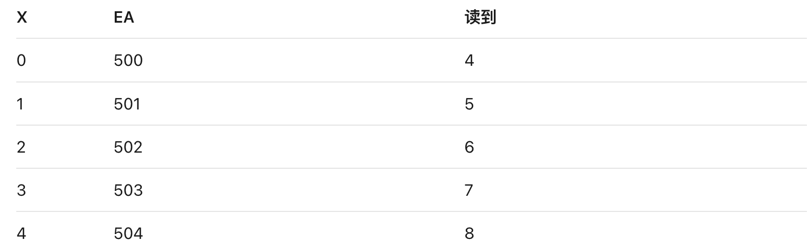
每次读完执行 Add X, #1（这里的 #1 用的就是 immediate 寻址）。这相当于 C 语言里的 a[i]：500 是数组首地址，X 是下标 i
总结表
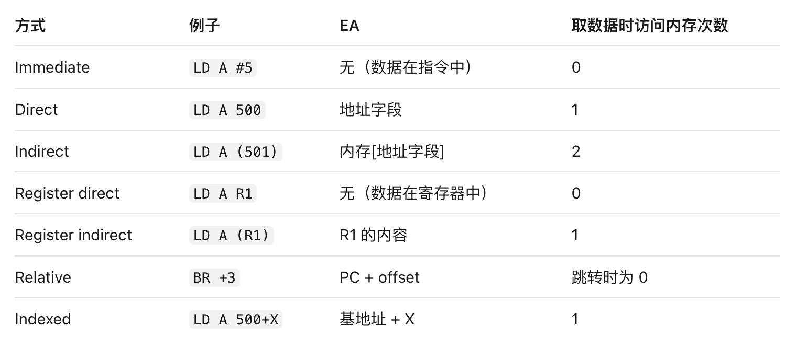